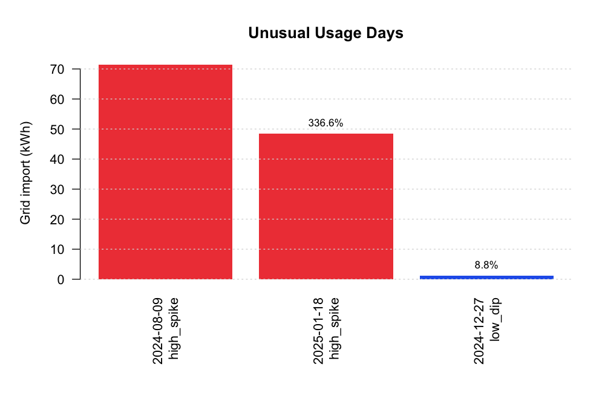

Records1460
Days covered365
Grid import19,958.0 kWh
Solar export2,608.2 kWh
Estimated cost$8,568.46
Key Signals
- Highest grid import month: 2024-07 at 2,058.3 kWh.
- Top grid import group: East Park at 10,173.4 kWh.
- Solar exports equal 11.6% of recorded consumption.
- Peak usage is 39.3% of recorded consumption.
Monthly Demand

| month | grid_import_kwh | solar_export_kwh | consumed_kwh | peak_kwh | shoulder_kwh | offpeak_kwh | estimated_bill | month_over_month_import_kwh |
|---|---|---|---|---|---|---|---|---|
| 2024-07 | 2,058.3 | 41.5 | 2,099.8 | 838.5 | 754.5 | 506.8 | 799.41 | — |
| 2024-08 | 1,995.8 | 69.8 | 2,065.7 | 817.4 | 752.2 | 496.1 | 785.85 | -62.5 |
| 2024-09 | 1,653.4 | 128.3 | 1,781.7 | 692.7 | 668.8 | 420.2 | 687.05 | -342.4 |
| 2024-10 | 1,404.3 | 230.5 | 1,634.7 | 628.5 | 612.1 | 394.1 | 636.74 | -249.1 |
| 2024-11 | 1,503.2 | 292.0 | 1,795.2 | 700.6 | 664.2 | 430.4 | 679.60 | 99.0 |
| 2024-12 | 1,609.5 | 384.4 | 1,993.8 | 789.9 | 725.4 | 478.6 | 741.50 | 106.3 |
| 2025-01 | 1,706.5 | 400.1 | 2,106.6 | 838.3 | 763.0 | 505.3 | 776.31 | 97.0 |
| 2025-02 | 1,473.7 | 343.4 | 1,817.0 | 714.5 | 669.4 | 433.1 | 674.62 | -232.8 |
| 2025-03 | 1,533.5 | 303.0 | 1,836.6 | 713.1 | 681.9 | 441.6 | 695.70 | 59.8 |
| 2025-04 | 1,383.0 | 218.1 | 1,601.1 | 615.9 | 602.4 | 382.8 | 622.78 | -150.5 |
| 2025-05 | 1,715.4 | 133.8 | 1,849.2 | 726.1 | 682.1 | 441.0 | 713.00 | 332.4 |
| 2025-06 | 1,921.4 | 63.3 | 1,984.6 | 783.5 | 722.2 | 478.9 | 755.90 | 206.0 |
Load Mix

| load_type | kwh |
|---|---|
| Peak | 8,859.0 |
| Shoulder | 8,298.1 |
| Off-peak | 5,409.0 |
| Solar export | 2,608.2 |
Groups

| neighbourhood | records | households | grid_import_kwh | solar_export_kwh | consumed_kwh | peak_share_pct | estimated_bill |
|---|---|---|---|---|---|---|---|
| East Park | 730 | 2 | 10,173.4 | 1,565.8 | 11,739.1 | 39.2 | 4,409.05 |
| Northbank | 730 | 2 | 9,784.6 | 1,042.4 | 10,827.0 | 39.3 | 4,159.41 |
Unusual Days

| day | neighbourhood | household_id | grid_import_kwh | consumed_kwh | estimated_bill | household_median_kwh | pct_of_average | modified_z | method | anomaly_type |
|---|---|---|---|---|---|---|---|---|---|---|
| 2024-08-09 | East Park | H-201 | 71.5 | 72.5 | 23.97 | 18.6 | 384.5 | 11.44 | modified_z | high_spike |
| 2025-01-18 | Northbank | H-101 | 48.4 | 53.1 | 17.43 | 14.4 | 336.6 | 9.56 | modified_z | high_spike |
| 2024-12-27 | Northbank | H-102 | 1.1 | 1.1 | 1.48 | 12.1 | 8.8 | -6.34 | modified_z | low_dip |
Savings Opportunities
- Shift peak usage Peak is 39.3% of consumption. Moving 10% of peak into off-peak could reduce demand charges. medium impact
- Increase solar self-consumption Solar exports are 11.6% of consumption. Battery or load shifting could capture more value. medium impact
- Review estimated spend Average daily bill is $23.48 across 365 days. high impact